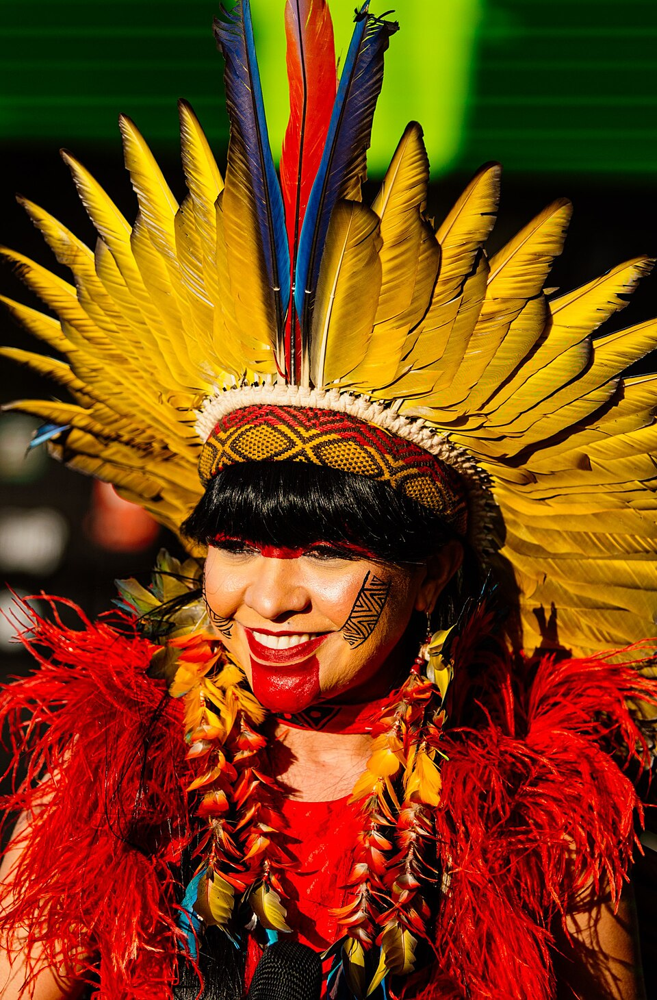
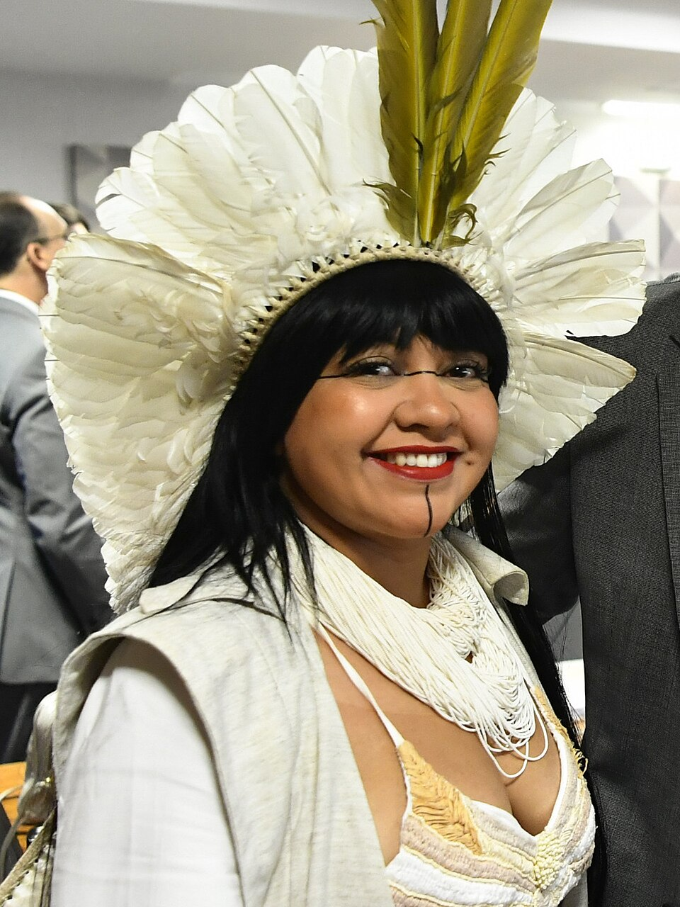
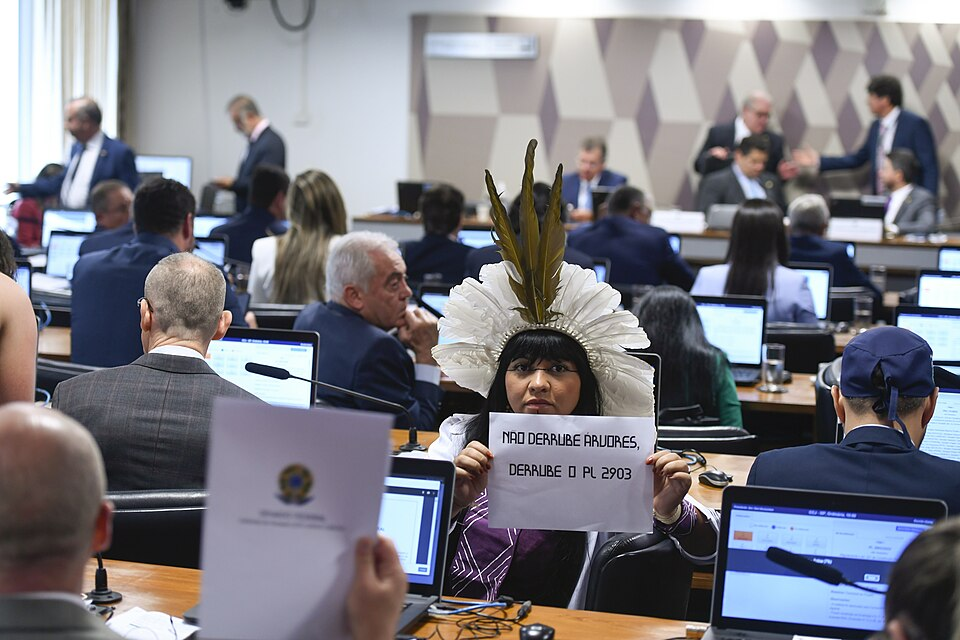
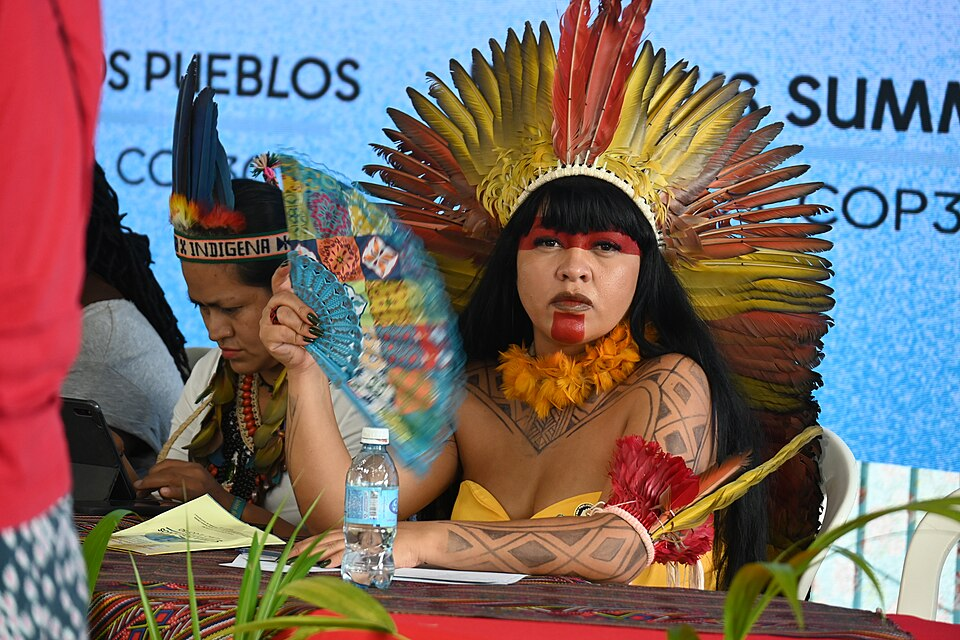

1990
Nasce Célia Nunes Correa, conhecida como Célia Xakriabá, no território indígena Xakriabá, em Minas Gerais. Sua infância é marcada pela vivência comunitária, pela relação com a terra e pelo contato com os saberes tradicionais de seu povo.

"Existia um Brasil do cocar antes do Brasil da coroa."
Célia Xakriabá
Foto: Pedro Gontijo / Senado Federal. Licença: Creative Commons Attribution 2.0.
Trajetória inicial: território, educação e luta indígena

Foto: Bruno Figueiredo / Área de Serviço. Licença: Creative Commons Attribution-Share Alike 2.0.
Célia Xakriabá nasceu no território indígena Xakriabá, em Minas Gerais, e construiu sua trajetória a partir da defesa da terra, da educação e da cultura dos povos originários. Desde cedo, sua vida esteve ligada às lutas de seu povo pela preservação do território, da memória ancestral e dos modos de vida indígenas. Sua formação foi marcada pelo contato com os saberes tradicionais de sua comunidade e também pela busca por espaços formais de educação, compreendendo o conhecimento como ferramenta de resistência, fortalecimento coletivo e transformação social.
Ao longo de sua caminhada, Célia Xakriabá tornou-se professora, antropóloga, ativista e liderança indígena, atuando em defesa dos direitos territoriais, da educação indígena e da participação dos povos originários nos espaços de decisão política. Sua trajetória representa a união entre ancestralidade e ação contemporânea, mostrando que a luta indígena não está apenas no passado, mas permanece viva na defesa da terra, da natureza, das mulheres indígenas e da democracia. Com sua voz firme, Célia tornou-se uma das principais lideranças indígenas brasileiras da atualidade.
Nasce Célia Nunes Correa, conhecida como Célia Xakriabá, no território indígena Xakriabá, em Minas Gerais. Sua infância é marcada pela vivência comunitária, pela relação com a terra e pelo contato com os saberes tradicionais de seu povo.
Cresce em um contexto de luta pela preservação do território, da cultura e da identidade Xakriabá. Desde cedo, compreende a importância da educação e da organização coletiva como formas de resistência diante das desigualdades enfrentadas pelos povos indígenas.
Dedica-se aos estudos e passa a ocupar espaços acadêmicos, relacionando os conhecimentos tradicionais indígenas com a produção de conhecimento formal. Sua formação fortalece sua atuação como educadora, pesquisadora e liderança política.
Torna-se professora e passa a defender uma educação indígena diferenciada, que respeite os territórios, as línguas, os modos de vida e os saberes ancestrais dos povos originários. Para Célia, a educação é também uma forma de luta e proteção da memória coletiva.
Consolida sua atuação em movimentos indígenas nacionais, participando de mobilizações em defesa da demarcação de terras, dos direitos constitucionais dos povos originários e da proteção ambiental. Sua voz ganha destaque em debates sobre território, ancestralidade e justiça social.
Célia Xakriabá ganha projeção nacional ao se apresentar como uma das lideranças indígenas comprometidas com a renovação da política brasileira. Sua atuação fortalece a presença de mulheres indígenas nos espaços públicos e nos debates sobre democracia.
É eleita deputada federal por Minas Gerais, tornando-se a primeira mulher indígena eleita para representar o estado na Câmara dos Deputados. Sua eleição simboliza um marco histórico para a representatividade indígena e feminina na política brasileira.
Assume o mandato parlamentar defendendo pautas relacionadas à demarcação de terras indígenas, justiça climática, educação, cultura, direitos das mulheres e proteção dos povos originários. Sua atuação reforça a importância da presença indígena nos espaços de decisão.
Ancestralidade, educação, território e representatividade política.

Foto: Geraldo Magela / Agência Senado. Licença: Creative Commons Attribution 2.0.
Célia Xakriabá é uma mulher extraordinária porque transforma sua trajetória pessoal e coletiva em uma luta permanente pela vida, pela terra e pelos direitos dos povos indígenas. Sua atuação une ancestralidade, educação, pensamento crítico e ação política, mostrando que os saberes indígenas são fundamentais para a construção de uma sociedade mais justa, diversa e comprometida com o futuro. Ao ocupar espaços acadêmicos, sociais e institucionais, Célia rompe barreiras históricas e amplia a presença das mulheres indígenas nos debates nacionais.
Sua importância está também na forma como defende o território como lugar de memória, identidade, espiritualidade e sobrevivência. Para Célia, lutar pela terra é lutar pela continuidade dos povos, pela proteção da natureza e pela preservação das futuras gerações. Como liderança indígena e deputada federal, tornou-se símbolo de coragem, representatividade e resistência, inspirando jovens, mulheres e comunidades a ocuparem espaços de decisão sem abandonar suas raízes, culturas e compromissos coletivos.
Influência sobre educação, política, território e movimentos indígenas.
O legado de Célia Xakriabá está ligado à defesa da vida, da democracia, da educação indígena e dos territórios originários. Sua trajetória mostra que a presença indígena nos espaços de poder é essencial para enfrentar desigualdades históricas e construir políticas públicas mais justas. Ao defender a demarcação de terras, a proteção ambiental e o reconhecimento dos saberes ancestrais, Célia contribui para ampliar o entendimento de que os povos indígenas não pertencem apenas ao passado da história brasileira, mas são protagonistas do presente e do futuro do país.
Sua atuação inspira novas gerações de mulheres indígenas a estudarem, liderarem, ocuparem espaços políticos e defenderem suas comunidades. Célia Xakriabá representa uma liderança que carrega a força da ancestralidade e, ao mesmo tempo, atua nos debates mais urgentes da atualidade, como justiça climática, direitos humanos, diversidade cultural e proteção dos territórios. Seu legado é o de uma mulher que transforma palavra, corpo e território em resistência.
Fotos e documentos representativos.

Célia Xakriabá em registro público, representando a presença das mulheres indígenas nos espaços de debate político e social no Brasil.
Foto: Câmara dos Deputados / Wikimedia Commons — verificar licença da imagem utilizada

Célia Xakriabá exibe cartaz com a frase “Não derrube árvores, derrube o PL 2.903/2023” durante reunião da Comissão de Constituição, Justiça e Cidadania no Senado Federal, em 2023. A imagem registra sua atuação em defesa dos territórios indígenas e contra o Marco Temporal.
Foto: Edilson Rodrigues / Agência Senado. Licença: Creative Commons Attribution 2.0.

Célia Xakriabá durante a COP30, no Brasil, em 2025, representando a luta dos povos indígenas pela defesa dos territórios, dos direitos originários e da justiça climática.
Foto: Centro de la Mujer Peruana Flora Tristán. Licença: Creative Commons Attribution-Share Alike 4.0.
Livros, artigos e documentos históricos.
Fonte oficial para nome civil, partido, mandato em exercício, data de nascimento, naturalidade, comissões e atuação parlamentar recente. Link: https://www.camara.leg.br/deputados/206018?ano=2026
Fonte oficial para escolaridade, profissão, mandato, cargos em comissões, coordenação de Educação Escolar Indígena, mestrado e obras publicadas. Link: https://www.camara.leg.br/deputados/206018/biografia
Perfil sobre sua primeira legislatura, eleição como primeira mulher indígena deputada federal por Minas Gerais e presidência da Comissão da Amazônia e Povos Originários. Link: https://www2.camara.leg.br/a-camara/estruturaadm/secretarias/secretaria-da-mulher/coordenadoria-dos-direitos-da-mulher/bancada-feminina-57a-legislatura-2023-2027/celia-xakriaba
Reportagem sobre formação, território Xakriabá, educação indígena, atuação desde jovem e coordenação de Educação Escolar Indígena em Minas Gerais. Link: https://www.ufmg.br/95anos/diversa-95/um-pe-no-mundo-outro-na-aldeia/
Notícia sobre a tese Ancestraliterra, defendida em 2024, e o reconhecimento de Célia como primeira mulher indígena doutora pela UFMG. Link: https://www3.ufmg.br/comunicacao/noticias/mulheres-indigenas-podem-reflorestar-o-pensamento-afirma-celia-xakriaba
Fonte autobiográfica pública sobre suas origens, formação no território, educação indígena, movimento indígena, atuação parlamentar e luta contra o marco temporal. Link: https://www.celiaxakriaba.com/me-conhe%C3%A7a
Fonte sobre a ANMIGA, o protagonismo das mulheres indígenas e a presença de Célia Xakriabá como antropóloga e liderança indígena. Link: https://apiboficial.org/2021/03/04/mulheres-indigenas-lancam-articulacao-nacional-no-dia-internacional-das-mulheres/
Fonte sobre a posse ancestral de Célia Xakriabá e Sonia Guajajara, a Bancada do Cocar, a ANMIGA e a frente parlamentar indígena. Link: https://apiboficial.org/2023/02/02/mulheres-bioma-reafirmam-base-de-resistencia-em-posse-ancestral-de-deputadas-indigenas/
Fonte de contexto sobre o povo Xakriabá, território, localização em Minas Gerais, história, organização social e luta pela ampliação das terras demarcadas. Link: https://pib.socioambiental.org/pt/Povo%3AXakriab%C3%A1
Fonte sobre a coletânea que inclui diálogo de Célia Xakriabá e Luiz Eloy Terena sobre protagonismo indígena, saúde, memória e política. Link: https://books.scielo.org/id/stqxp
Conheça outras trajetórias marcantes da luta por justiça e transformação social.

Foto: verificar autoria e licença da imagem utilizada.
Liderança indígena Kayapó que se tornou símbolo internacional da resistência contra a destruição dos territórios originários.
Saiba mais
Foto: Ricardo Stuckert / PR, via Wikimedia Commons.
Jurista e liderança indígena que ampliou a presença dos povos originários nos espaços de decisão política.
Saiba mais
Foto: verificar autoria e licença da imagem utilizada.
Escritora e ativista indígena brasileira, referência na defesa das mulheres indígenas e das culturas originárias.
Saiba mais
Foto: verificar autoria e licença da imagem utilizada.
Ativista indígena Munduruku reconhecida pela defesa do território, da cultura e da proteção ambiental.
Saiba mais